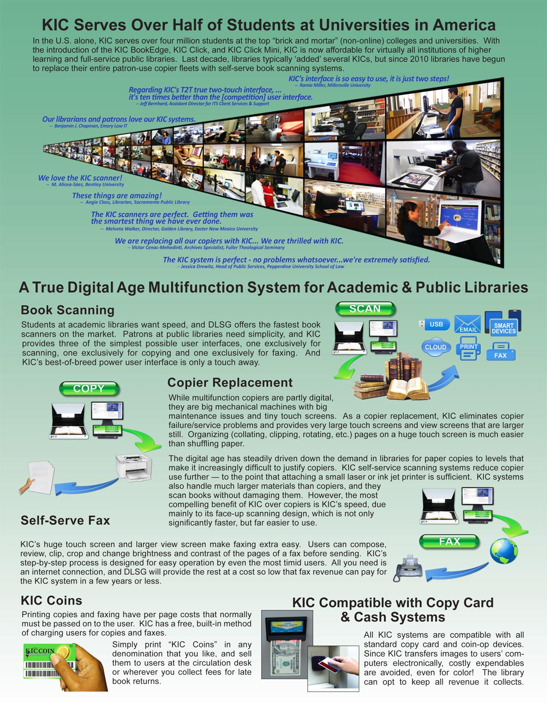
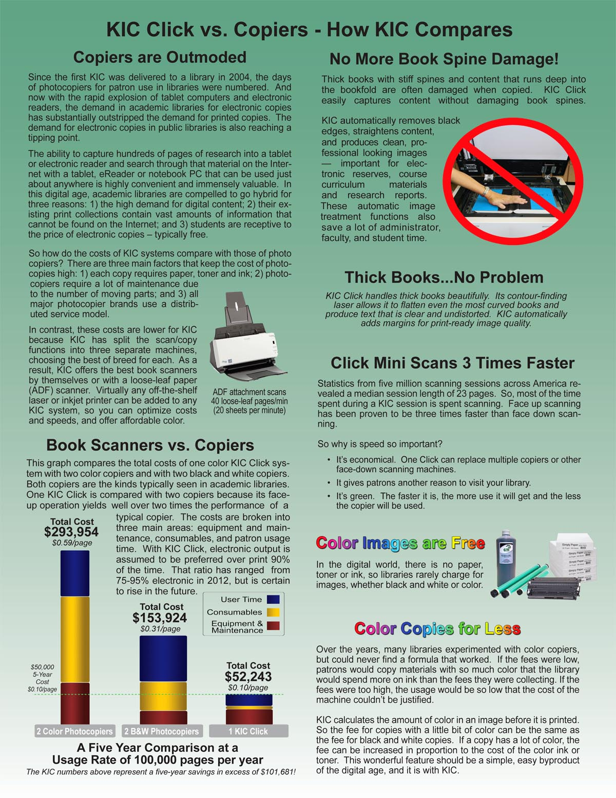
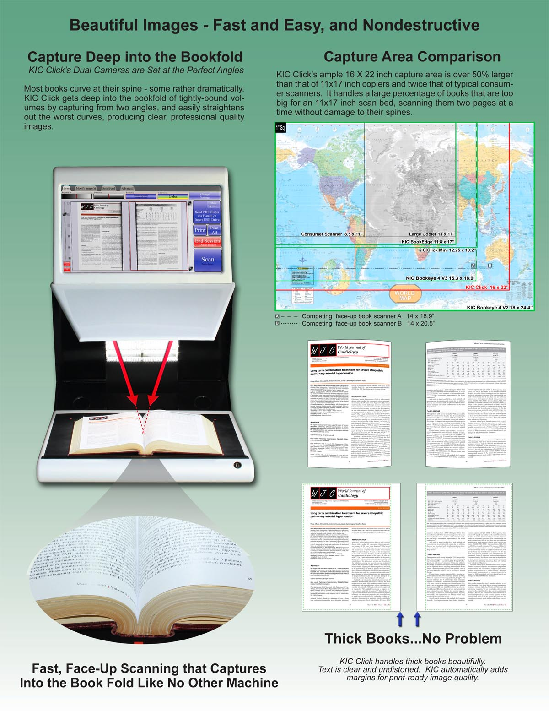
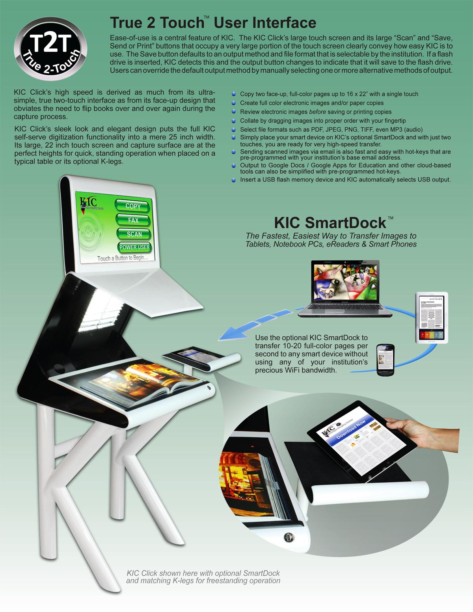
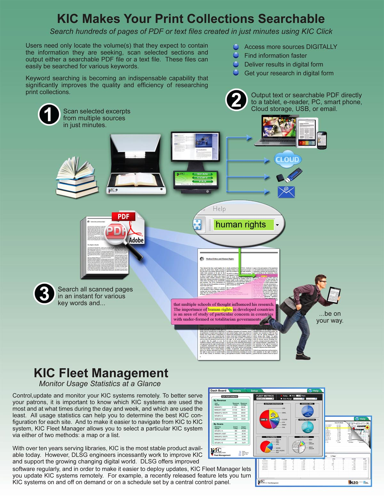
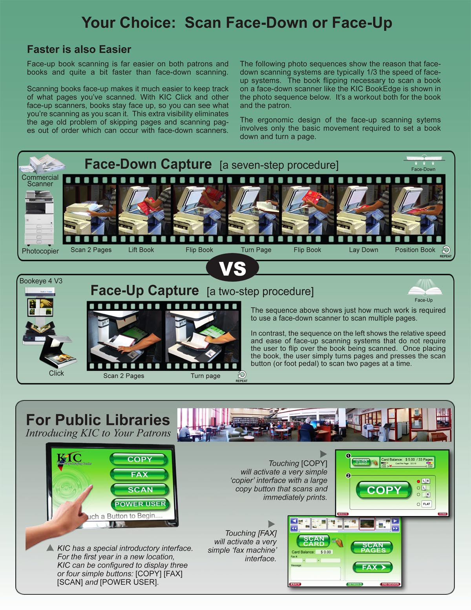
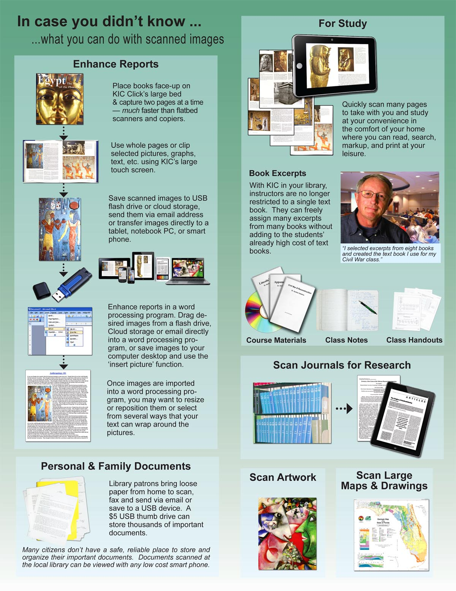
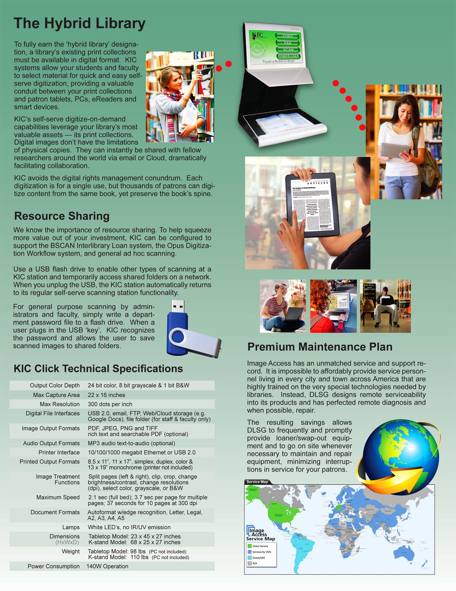
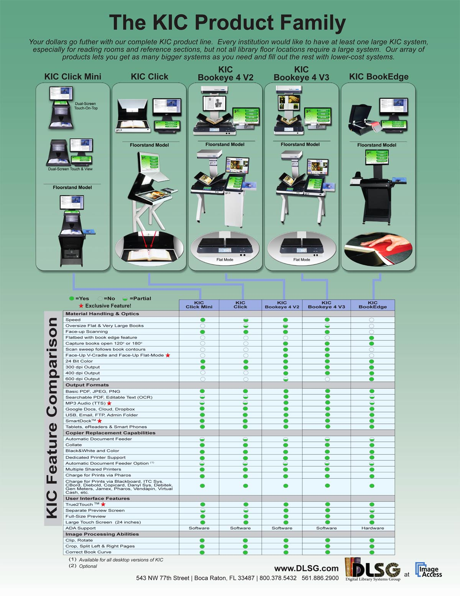

-
Elegant Form
-
Affordable
-
16x21" Scan Bed
-
23" Touch Screen
-
Face-Up Scanning
-
Complete Package


Click™ Scanner
KBC-00
        Click™ - developed specifically for the self-service market
When people see the new KIC Click™ for the first time, the most common expression is "it's so beautiful." And with True2Touch, it's as easy to use as it is beautiful. Are there any compromises? You decide.
The KIC Click™ captures book content as fast as 1 page per second! With a bed size 30% larger than its nearest competitor, it captures up to 21x16 inch books and materials at an uncompromising resolution of 300dpi.
Photocopiers, PCs, monitors and keyboards clutter up otherwise beautiful libraries across America. The smooth, triple-layer, pearlescent white KIC Click™ totally reverses that trend. It adds beauty to the most beautiful libraries. Inspired by an outstanding effort of the fledgling tablet industry to turn technology into something more like jewelry or a fashion accessory than a computer, the pearlescent KIC Click™ evokes comments like, "We care about the appearance of our library and this machine is over the top!"
The KIC Click™ perfectly completes the KIC family of self-serve digitizing systems. The KIC Bookeye 4 has the most durable production book scanner, the only book scanner with both V-cradle and flat modes, and the highest quality 600dpi of any scanner. The KIC Click™ is small, fast and beautiful, and the KIC BookEdge is cheaper than most floor standing black-and-white photocopiers. And since none of them use toner or paper, they're environmentally friendly and ultimately far cheaper to run than copiers.
Key Features of Click™
The Click™'s sleek look and elegant design put the full KIC self-serve digitization functionality into a mere 25 inch width. It's large, 23 inch touch screen and capture surface are at the perfect heights when placed on a typical table or desktop. The Click™ also has an optional matching stand for freestanding operation.
- Digitize / copy up to 16x21 inch pages in full color
- Create full color electronic images and/or paper copies with just two touches
- Review large electronic images before saving or printing copies
- Electronically collate and print copies on a standard laser printer
- Create searchable PDF, JPEG, TIFF, PNG and editable text files
- Create audio files from text for MP3 players, including iPods
- Go 'green'. Promote minimal use of paper and ink.
- Charge for prints, not for images
- Output to USB devices, email, file servers, the Web & printers
- Minimize book spine damage with face-up scanning
Unlike copiers and flatbed scanners, the KIC Click™ allows users to digitize books face-up, without damaging books by having to press them hard against a glass plate. The Click™'s lightening speed is derived as much from its fast opto-electronics as from the fact that its face-up design obviates the need to flip books over and over again during the digitization process.
The Click™ produces beautiful, full-color images at no additional cost over black & white images! Searchable PDF's and editable text files are a snap to create. As with all KIC self-serve systems, the Click™'s text-to-speech capability produces audio files that can be played in any MP3 player. Studying and research have never been so easy!
Document Formats
Performance Specification
1 second per page for multiple pages
Technical Specifications
rich text and searchable PDF (optional)
Options and Functions
Product Documentation


........ We love the KIC scanner. It is incredibly fast and simple to use. - Art Institute of Chicago
........ Students refer to KIC as the system that does everything. - Northwestern
........ We are thrilled with the KIC and Opus scanning systems - University of Oregon
........ KIC is the best asset in the library. - Southern Methodist University
........ We love how simple the KIC scanner is. Scanning face up makes it so easy for delicate books. - UCLA
........ KIC is free, it's convenient, and it keeps you out of the copy line. - Amherst College
........ My favorite is the new KIC Bookeye scanner...it has been quite popular.... It's so cool and scans super-fast. - Boston University
........ There are two pieces of equipment that I love in this library; the hole puncher and the KIC scan station, because they both work every time! - Florida Atlantic University
........ We are replacing all our copiers with KIC... We are thrilled with KIC. - Fuller Theological Seminary
........ Everything works so well - BSCAN ILL with the Bookeye has exceeded our expectations! - George Mason University
........ Thank you for providing such a great product and such great service, and for being committed to making sure that your product continues to be the best that it can be! - Maryville University
........ We're VERY pleased with BSCAN ILL, Everything is working great! - Tufts University
........ Our ILL Department is practically based on our Bookeye scanner with Bscan ILL, we love this product. - University of Memphis
........ We're very impressed with the quality of the scans from our Bookeye 4. - University of South Florida
........ We're so pleased with the service from DLSG at Image Access. - University of Vermont
........ I was extremely impressed with the level of service and dedication ... always a pleasure using your products! - University of Washington, Seattle
........ Opus FreeFlow and our Bookeye scanner are so great we bought a second one! - Wayne State University
........ It's all working great! - Western Connecticut State University
........ Everyone is really liking KIC. It is totally saving us a lot of time. KIC is very intuitive and simple to use. - Montana State University Billings
........ We love our Bookeye 3, love it. We love Opus FreeFlow too. - University of Houston
........ We love Opus FreeFlow and all the auto features, like the thumb removal and the book deskew. The quality of the images are absolutely amazing. - The American Museum of Natural History
........ We love BscanILL and how it automatically sends out articles to the users. - University of Denver
........ Wow! KIC is very easy to use and is self explanatory. Everyone at the school has had nothing but praise for it . - Cleveland State University
........ Given the virtual aspect of students' learning today, this method of research material delivery is essential. - University of Washington
........ We love KIC with the Bookeye 4 scanner. The Inter-library Loan department salivates on a regular basis. They have orbital (face-up) scanners of their own, but they come down to use KIC because they like it much better. - Texas A&M
........ It's the most essential piece of equipment in our library. - Baylor University
........ The KIC interface is ten times better than the BookScan Station (CCP, Scannx, Xerox) user interface. - Harvard University
........ We LOVE LOVE LOVE the cropping features and the upload speed on our KIC Bookeye 4! - The Brooklyn Museum of Art
........ We love our KICs! - Howard Hughes Medical Center
........ I can see so many uses for this KIC book scanning system, and it will definitely save wear and tear on library materials. - Northwestern State University
........ KIC is what people want. We have noticed a significant decrease in photocopy use and an increase in scanner use. The KIC scanners are more efficient and they save paper. Both students and faculty like how easy they are to use and that they save time. - University of Missouri, Kansas City
........ I'm very pleased with the Bookeye and Opus FreeFlow, more importantly the service supplied by your team. I want to commend all of you! I may be used as a reference! - 11th Circuit Court of Appeals
........ We have been very pleased with this scanner and software (BSCAN ILL with Bookeye scanner), both with the quality of the scans and with the workflow efficiencies it offers. Support for the product by the vendor has also been very satisfactory... (in addition) we are filling a larger number of journal article requests from full-text online databases. - University of St. Thomas
........ Opus searchable pdf's are more reliable, take less time and are much better than the Acrobat text pdf's. - Southern Illinois University, Edwardsville
........ As with all really cool, useful technology it was very popular so we are thrilled to announce that a second KIC has been set up on the first floor of our library. - Plattsburgh State University of New York
........ Students line up to use KIC instead of photocopiers. Our users are loving that they do not have to pay for scanning with KIC. - University of Texas, Arlington
........ I am always impressed with the service that DSLG / Image Access provides. - Columbia Law School
........ We love the BookEdge so much more than the Scannx product. KICs interface is so easy to use, it is just two steps. - Millersville University of Pennsylvania
........ I'm very impressed with Bookeye 4 scanner and BSCAN ILL software. We increased our productivity... what took me 4 hours in the past, now it takes me just 1 hour. We are very happy. - Midwestern State University
........ I love the excellent and prompt service you guys provide, I know a lot of tech companies that provide terrible service. KIC is very easy and simple to use. I love that it splits the pages for you. - Miami University of Ohio
........ Wow, you guys (service department) are awesome. These are the best scanners ever. - Colorado State University
........ We've been scanning our older public records using a Bookeye since 2006. Digitizing our records and making them available on line is one of the best decisions we made. - Hendricks County
........ KIC is very popular here, people use it all the time. I love how it performs so quickly. - Bentley University
........ We and our patrons are thrilled with the KIC BookEdge! - St. Mary's College of Maryland
........ Our new WideTEK 25 scanner so beautiful! The quality of images is so impressive. We are extremely happy to have this scanner in our department. - Northeastern University
........ KIC made my life so much easier during a stressful exam week! - Duke University
........ Our KIC BookEdge is our new best friend! It has enhanced our ILL process and solved the problem of copying tightly bound journals with almost no gutter left. Our students love using it too! - Baylor University, School of Nursing
........ The KIC BookEdge+ is a very intuitive system. I got the hang of it quickly... I don't know how, but you folks built a machine that knew what I was thinking, what I was needing. ... Just feedback to show my appreciation for KIC and your super service. Like I said, you guys made me feel important! - Texas Tech University
........ Our KIC BookEdge system looks so much nicer than the Scannx (Xerox, CCP), the cabinet looks so sleek. - Villanova
........ If I had the money I'd buy three more of these! (Bookeye 3 R2) We run it day in and day out with great results! - Boston University
........ We Really like KIC, it is very easy and intuitive. - University of San Francisco
........ The BSCAN ILL software and BookEdge scanner has increased our productivity and efficiency significantly. My student workers love it. - Montana State University, Billings
........ Students are absolutely stunned by KIC's abilities. - North Georgia College & State University
........ Our students LOVE the KIC BookEdge systems, so we think they were a great purchase. - Emporia State University
........ I can tell you that of the public scanners we have for patron use, [which includes the Zeta] the KIC BookEye systems are by far the most popular. - Texas A&M University
........ Students love KIC and use it ALL the time. - Paul Smith's College
........ Students LOVE KIC - it's totally intuitive - works like a charm! - St. Mary's College
........ KIC is seriously impacting my printer/copier revenue stream! Students love it! - University of New Hampshire
........ Who needs a photocopier now that we have a KIC book scanning system? - Diablo Valley College
........ We always have long lines to use our 6 KIC scanners! - University of Houston
........ Our KIC was so popular - always a line of students waiting to use it - we had to purchase a second one! - University of Alaska
........ KIC is AWESOME!" - University of Oregon .......... We LOVE our KIC book scan stations! - University of Iowa
........ The KIC interface seems to be better designed based on staff and student comments. - Texas A&M
........ Love the KIC scanner. NO need for a photocopier! - University of Pennsylvania
........ We love you KIC scanners AND so do our STUDENTS! Thanks! - Missouri, Columbia
........ We love our KIC system, it is so much cooler than the Ivina. KIC looks like it is from the 21st century, the other one looks like it is from a hundred years ago. Also we love the fact that you can export as an MP3 in KIC. - Millersville University of Pennsylvania
........ KIC makes my research so much more accessible! Thank ya! - Duke University
........ Students love the KIC, they are always using it. You would think that with all the other technology our library has, that students would use them. No, instead they say 'You guys have a KIC!! That is so Cool!' - Miami University of Ohio
........ Without a doubt, the KIC BookEdge is a great machine. But the service we received...is what made the sale. - St. Mary's College of Maryland
........ People love the KIC Bookeye 4 scanner, they love using the cradles. - Columbia Law School
........ Our administrators have noted that photocopier activity has gone down in the past years, and they are attributing that to KIC ... the quality of the scans are excellent ... The Bookeyes are amazing scanners. - University of Texas
........ The opportunities created for NSU students to enhance their studies and course materials will be unmatched by most institutions of comparable size---and by many that are much larger! - Northwestern State University
........ Each time I've had the opportunity to introduce a new student to this service, the response has generally been surprise and delight. - University of Washington